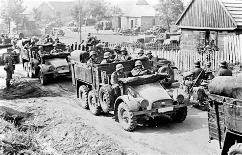

World War II
A global conflict that shaped modern history (1939–1945)
How Did WWII Start?
World War II began on September 1, 1939, when Nazi Germany, under the leadership of Adolf Hitler, launched a sudden and aggressive invasion of Poland. This attack was the result of years of growing tension in Europe, as Germany tried to overturn the limits placed on it after World War I and sought to expand its territory and power. Hitler had already rebuilt Germany’s military and taken over other regions—such as Austria and parts of Czechoslovakia—while other European countries, especially Britain and France, tried to avoid conflict by giving in to some of his demands. But the invasion of Poland was too serious to ignore. Britain and France, who had promised to defend Poland, demanded Germany stop its attack. When Hitler refused, they declared war on Germany on September 3, officially starting what would become a worldwide conflict. The invasion showed that Hitler’s ambitions threatened the entire balance of power in Europe, and it set off a chain reaction that eventually drew in countries across the globe, turning a regional crisis into one of the most destructive wars in history.
Adolf Hitler

Adolf Hitler (1889–1945) was a German political leader who became the dictator of Nazi Germany from 1934 to 1945. He rose to power as the head of the National Socialist German Workers’ Party (Nazi Party), promoting extreme nationalist, racist, and anti-Semitic ideas. Hitler believed in the superiority of the “Aryan” race and blamed Jews, communists, and other groups for Germany’s problems after World War I. He used propaganda, mass rallies, and violence to consolidate power, eventually establishing a totalitarian state. Hitler’s aggressive expansionist policies led to the outbreak of World War II, and his regime carried out the Holocaust, the systematic murder of six million Jews and millions of others. He remained in power until the collapse of Nazi Germany, committing suicide in April 1945 as Allied forces closed in on Berlin.
Countries Involved
Allied Powers: USA, UK, Soviet Union, China
Axis Powers: Germany, Italy, Japan
Major Battles
- Battle of Britain: The Battle of Britain (July–October 1940) was a World War II air battle between Germany’s Luftwaffe and Britain’s Royal Air Force. Germany tried to destroy Britain’s air defenses to prepare for an invasion, but the RAF successfully defended the skies using fighter planes and radar. The battle marked Hitler’s first major defeat and kept Britain in the war.
- Battle of Stalingrad: The Battle of Stalingrad (August 1942 – February 1943) was one of the deadliest battles of World War II, fought between Nazi Germany and the Soviet Union. Germany aimed to capture the city of Stalingrad to control the Soviet oil fields and break Soviet morale. Fierce urban combat and harsh winter conditions led to massive casualties on both sides. The Soviet army eventually encircled and defeated the German forces, marking a turning point in the war on the Eastern Front, as Germany began to retreat after this loss.
- D-Day: Battle of Normandy: The Battle of Normandy, also known as D-Day, began on June 6, 1944, when Allied forces launched a massive invasion of German-occupied France on the beaches of Normandy. The goal was to liberate Western Europe from Nazi control. After intense fighting on the beaches and in the surrounding countryside, the Allies broke through German defenses, eventually liberating Paris and pushing German forces back. The battle was a major turning point in Europe, opening a new front and accelerating the defeat of Nazi Germany.
- Battle of Midway: The Battle of Midway (June 4–7, 1942) was a crucial naval battle in the Pacific during World War II between the United States and Japan. Japan aimed to capture the Midway Atoll to expand its control in the Pacific, but U.S. forces, having broken Japanese codes, anticipated the attack. The U.S. Navy ambushed the Japanese fleet, sinking four aircraft carriers while losing only one of its own. This victory shifted the balance of power in the Pacific and marked a turning point in the war against Japan.
The Holocaust
The Holocaust was the systematic, state-sponsored persecution and murder of six million Jews and millions of others by Nazi Germany during World War II. Led by Adolf Hitler, the Nazis targeted Jews, Romani people, disabled individuals, political opponents, and other groups they considered “undesirable.” Victims were forced into ghettos, labor camps, and ultimately sent to extermination camps where they were killed in gas chambers or through starvation, disease, and forced labor. The Holocaust remains one of history’s most horrific examples of genocide and human cruelty.
End of the War
The end of World War II came in Europe in May 1945 and in the Pacific in August 1945. In Europe, Germany surrendered on May 8, 1945 (V-E Day) after Allied forces advanced from the west and Soviet forces from the east, and Adolf Hitler had committed suicide in April. In the Pacific, the war ended after the United States dropped atomic bombs on the Japanese cities of Hiroshima and Nagasaki in August 1945, leading Japan to surrender on September 2, 1945 (V-J Day). The war left much of Europe and Asia devastated, caused tens of millions of deaths, and reshaped the global political order.
WWII Timeline
- 1939: Germany invades Poland
- 1941: Pearl Harbor attack
- 1944: D-Day invasion
- 1945: War ends in Europe and Pacific